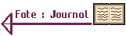
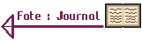

Programme code en Python en Poo avec la Librairie Pygame sur Pycharm
Une Croix Et Un Cercle
Ce Projet est un Morpion (Tic Tac Toe) est un
projet fait en POO, ce qui a rendu le Programme
personnalisable (symbole et grille), il a aussi
une interface graphique en Pycharm, ce qui permet
de jouer avec d'autres personnes.

Contre Qui Jouer ?
Le Programme etant code en POO, il a ete simple
d'installer une IA, coder avec un principe de
Min-Max et avec un systeme de difficultes
allant 1 a 9, les nombres de la difficulte
correspondent au nombre de coups possible,
etant donne qu'il y a 9 cases, la 9eme difficultes
est en principe, imbattable.


Conclusion
Ce Programme a ete fait en classe de Terminal et etait le projet qui a ete un des plus laborieux mais aussi un des plus interessant et agreable a faire avec une sensation d'evolution. Il m'a beaucoup apporte sur le fonctionnement de la POO et sur comment faire. Se fus aussi la premier fois que j'ai touche aux IA et ça m'a beaucoup passionne d'y toucher et j'ai aussi touche a de l'interface graphique a l'aide de Pygame, un programme en apparence simple mais qui m'a permis de toucher a un peu tout.
 
